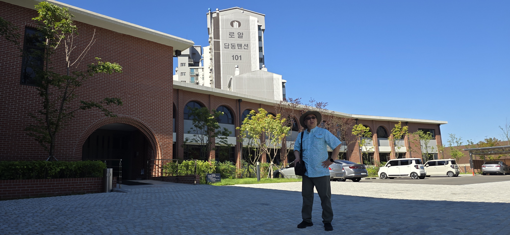

손자(孫子):
Hi Grandpa, came across some digital photos from the year of the Snake (乙巳)1.
Wasn’t this the period when you were slowing down and transitioning from company funded trips?
The photos told a different story.
Older Me:
That was the year the oldest of your maternal uncles got married, Uncle JH.
Yes, that was post company sponsored travel days. And I thought of taking things slower but your grandma had other ideas.
She was invited to the wedding in Korea and scheduled to travel there.
But I wasn’t – initially.
Like many things in life, women’s willpower changes the outcome.
Soon, I was making travel plans and thinking of people and places to meet and visit.
손자(孫子):
So how did you go about detailed planning? Without specifics of business trips.
Older Me:
We have visited Korea a number of times, but this was the first time only 2 of us traveled.
At that time we had sold the business that required the attention of grandma. Because I was working at the time, chose a 10-day visit duration. Planned around the wedding.
That opened up many options and possibilities.
In addition, a direct flight to Incheon, Korea, had begun just few weeks prior to the visit.2
I had a number of aunts and uncle that were in their 80s and 90s.


.jpg)
My mother’s younger siblings in Korea were, 90 and 87.
My father’s youngest brother was 82.
My mother’s church friend was 90.
Visiting them was my priority.
Plus I wanted to visit my hometown 인천(仁川).
The remaining time would be spent either shopping or visiting sites around the country.
I didn’t know how we could do all of this in 10 days.
We decided to visit 서울성전 at the beginning and at the end of our visit.
손자(孫子):
I do remember stories about your aunts and uncles.
I am glad you kept in touch with them over the years.
How did you get in touch with Grandma’s friends, after she had passed away?
Older Me:
We formed a group, LLJK, (이이정강).
We first met in 인천, during the early days of the Church in the area.
We had maintained our friendship with the help of the group chat.
All but L1 had moved to the States, when I told L2 and J that I would be traveling to Korea, they suggested I get in touch with L1, who lived in 마포 area of 서울
L2 warned me that there aren’t many people that would remember me and advised me to visit and enjoy the local food.

L1, Author, J. Back Row far right, L2L1 met me on a day that was 90+ degrees Farenheit and same amount of humidity.
I wanted to meet my aunt first and then tour the town.
I wondered why he kept avoiding a lunchtime rendenvous
As a compromise, we met at 9AM at 동인천역(東仁川駅)
By 10AM the weather was brutal, I was struggling with the heat and the hilly streets
As we walked, L1 rehearsed the history and people associated with the church in Incheon (인천)
Started in 중앙동, in a rented, converted 2-story building. Recall, one of the floor had a tatami (畳) floor.
Then a government property3 in 답동 was purchased and the existing building was renovated for church use.
Subsequently a new building was built on site. Eventually, all of the 인천 area wards were combined into a single meeting house in 주안.


L2손자(孫子):
Quite a day. You were lucky that L2 was available and willing to take you to places. How did it feel to walk around the places of birth and growth?
Older Me:
Things had changed dramatically in last 50 years. Except for few places that hadn’t changed, it was like many other places in modern Korea. Vertical growth and no green areas. Almost a feeling of visiting a foreign country.
Except, the memories of people and experiences. Meetings and activities in the old chapel.
Friends that still remember who I was and accept me as who I have become.
손자(孫子):
So did you visit your old church on Sunday?
Older Me:
Yes, I visited 인천1와드. That Ward was composed of the former, 답동, 송도, 주안 Wards
As we were driving towards, building I related the conversion story of my mother.
She had studied with the missionaries for nearly 2 years. But she still had some questions. She wrote them down.
When Harold B. Lee visited Korea and my mother attended the fireside All of mother’s questions were answered by the visiting general authority. Mom’s mind was set to join the church - intellectually
Then one afternoon, she dreamed a dream.
In the dream, there were 2 books. She could tell they were the Bible and the Book of Mormon. And a hand appeared and pointing to 2 books and touching them one by one said
These two books are equivalent.
She was ready to be baptized.
손자(孫子):
Thanks for sharing that. So did anyone recognize you?
Older Me:
L2 was correct, in a congregation of nearly 150 people only 3 people knew me. L2’s mother. L1’s sister and her husband.
I wondered if this will be similar to how we will be welcomed into the next life. There will be we may know and recognize but only a few would personally escort us through.
That person this time was L2’s mom.
She recounted how she and my mother served in the Stake Primary Presidency, without really understandint the calling.
Then she recounted my mother’s dream about the hand and 2 books. Almost word for word.
My testimony was strengthened. I had come home to my and my family’s Bountiful.
Thank you members of the 인천 area. In particular, thank you Sister 임윤님, Brother 유관종, Sister 이강주. For remembering me, welcoming me, and confirming the faith of my parents.
Footnotes
https://en.wikipedia.org/wiki/Sexagenary_cycle?oldformat=true↩︎
https://www.ksl.com/article/51329130/80-of-the-world-is-now-within-1-stop-of-salt-lake-city-thanks-to-its-newest-direct-flight↩︎
A KCIA type agency↩︎